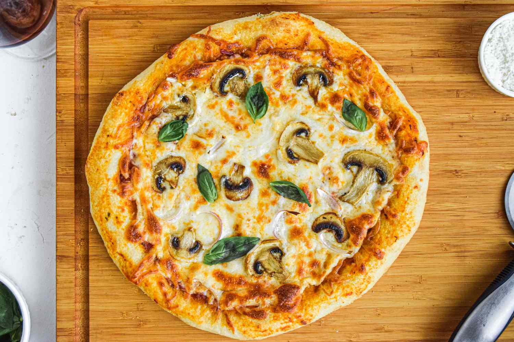

Pizza
Home Page

Description
I promise you'll never want to order delivery again after you see how easy it is to make pizza at home using fresh ingredients.
Ingredients
For the pizza dough
- 1 1/2 cups (355 ml) warm water (105°F-115°F)
- 1 package (2 1/4 teaspoons) active dry yeast
- 3 3/4 cups (490g) bread flour
- 2 tablespoons extra virgin olive oil (omit if cooking pizza in a wood-fired pizza oven)
- 2 teaspoons kosher salt
- 1 teaspoon sugar
For making the pizza and toppings
- Extra virgin olive oil
- Cornmeal (to help slide the pizza onto the pizza stone)
- Tomato sauce (smooth or pureed)
- Firm mozzarella cheese, grated
- Fresh soft mozzarella cheese, separated into small clumps
- Fontina cheese, grated
- Parmesan cheese, grated
- Feta cheese, crumbled
- Mushrooms, very thinly sliced if raw, otherwise first sautéed
- Bell peppers, stems and seeds removed, very thinly sliced
- Italian pepperoncini, thinly sliced
- Italian sausage, cooked ahead and crumbled
- Sliced black olives
- Chopped fresh basil
- Baby arugula, tossed in a little olive oil, added as pizza comes out of the oven
- Pesto
- Pepperoni, thinly sliced
- Onions, thinly sliced raw or caramelized
- Ham, thinly sliced
Steps
Making the Pizza Dough
- Proof the yeast
- Make and knead the pizza dough
- Let the dough rise
Preparing the Pizzas
- Preheat the pizza stone (or pizza pan or baking sheet)
- Divide the dough into 2 balls
- Prep the toppings
- Flatten the dough ball, and stretch out into a round
- Brush the dough top with olive oil
- Sprinkle the pizza peel with cornmeal, put flattened dough on top
- Spread with tomato sauce and sprinkle with toppings
- Slide pizza into the oven
Detailed Steps